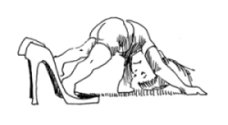
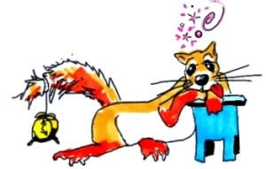
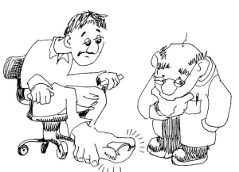

This page has usage examples for the following words:

arch of a foot 土ふまず つちふまず
back of a foot 足の背 あしのせ
blister 水ぶくれ みずぶくれ
bunions 母趾の付け根の出っ張り
ぼしのつけねのでっばり
corn, calluses たこ
disinfection 消毒 しょうどく
first aid 応急手当 おうきゅうてあて
fungal infection 水虫など（真菌感染） みずむしなど（しんきんかんせん）
hallux valgus 外反母趾 がいはんぼし
hardened skin 皮膚硬化 ひふこうか
heel かかと
ingrown toenails 爪が足指内にくいこむ つめがあしゆびないにくいこむ
podiatrist 足の専門医 あしのせんもんい
sole 足の裏 あしのうら
toenails 足の爪 あしのつめ
warts 魚の目 うおのめ

The skin on my baby toe and heels have become hard.
足の小指やかかとの皮膚が硬くなっています。
あしのこゆびや かかとのひふが かたくなっています。
I'm not sure if it's because of the shape of my foot or the shape of my shoes.
私の足の形が悪いせいか、靴の形が悪いのかわかりませんが。
わたしの あしのかたちが わるいせいか、くつのかたちが わるいのか わかりませんが。
I cut hardened skin off using a knife or sometimes with (a pair of) scissors.
硬くなった部分は、はさみかナイフで切り取っています。
かたくなったぶぶんは、はさみかナイフで きりとっています。
Is that alright?
大丈夫でしょうか？
だいじょうぶでしょうか？
My skin tends to get hard.
私の皮膚は、体質的に皮膚硬化になりやすいようです。
わたしのひふは、たいしつてきに ひふこうかになりやすいようです。
My fingers have calluses due to a lot of writing.
鉛筆を持つ指にもペンだこができます。
えんぴつをもつゆびにも ペンだこができます。
My toes have corns. They hurt so badly that when I wear shoes, I get headaches.
足の指が圧迫される部分に魚の目が出来ています。ひどく痛んで頭痛までします。
あしのゆびが あっぱくされる ぶぶんに うおのめができています。ひどくいたんで ずつうまでします。
The bone at the root of the big toe juts out, and all of toes are turning toward outside.
足の親指のつけ根の骨が出張ってきて、指全体が外側にそってきました。
あしのおやゆびのつけねのほねが でばってきて、ゆびぜんたいが そとがわにそってきました。
Is it hallux valgus?
外反母趾ですか？
がいはんぼしですか？
I put on a new pair of shoes today and a lot of blisters developed on my toes.
今日、新しい靴をはいたら、足の指に水ぶくれがいくつも出来てしまいました。
きょう、あたらしいくつをはいたら、あしのゆびにみずぶくれが いくつもできてしまいました。
I disinfected and put Band-Aid on the blisters that popped.
つぶれた部分は消毒して応急手当をしました。
つぶれたぶぶんは しょうどくして おうきゅうてあてをしました。
A conversation between a patient and a doctor about the hallux valgus
Patient:
As I wear the same type of shoes daily, certain parts of toes are pressed constantly. As a result, the skin becomes hard and the bone at the root of the big toe juts out, causing pain in my feet when I put on my shoes.
毎日、同じようなタイプの靴をはいているので、どうしても足の指の一定の部分が圧迫され続けてしまいます。その結果、皮膚が硬くなったり、親指のつけ根の骨が出っ張ってきたりして、靴を履くと痛みます。
Doctor:
The foot is said to mirror the health of the whole body. In particular, the cardiovascular diseases manifest as disorders of the foot. It is said that the distance we walk in our lifetimes is equal to four times around the earth. It is no wonder that everybody has foot disease of one type or another. If you wear ill-fitting shoes, the skin of certain parts of the foot will harden because of constant pressure, and the bones close to those parts become sensitive. Thus, you feel pain. Some people will have hallux valgus more easily than others, due to hereditary tendency, but the most prevalent cause is high-heeled shoes with narrow tips. In the US, there are foot specialists called podiatrists. We recommend consulting them for foot problems.
足は、身体の健康状態を写す鏡だとも言われています。特に循環器系の病気では足の障害として出現する場合が多くみられます。我々は一生の間、地球を４周する距離を歩くといわれますから、誰でも何らかの足の病気を持っているのも不思議ではありません。良く合わない靴を履いていると、皮膚が圧迫され続けることにより硬化し、過敏になっている骨や神経を刺激して痛みをもたらします。外反母趾は遺伝的になり易い人もいますが、先の細くなったハイヒールが一番の原因です。アメリカには、podiatrist と呼ぶ足の専門医がいますので、足に関する問題はぜひご相談なさるとよいですね。

My two cents 一言おせっかい
My two cents worth of advice. It may or may not be worth a lot, but this is what I think or what I think you should do. After all, we walk 8,000 to 10,000 steps a day. We’d better take a good care of our feet more than we do our faces.
我々は毎日８千～１万歩歩くと言われています。顔の手入れにもまして良い面倒をみてやりましょう。
[ga01]
| © 1995-2013 NACOS International Institute. All Rights Reserved. |